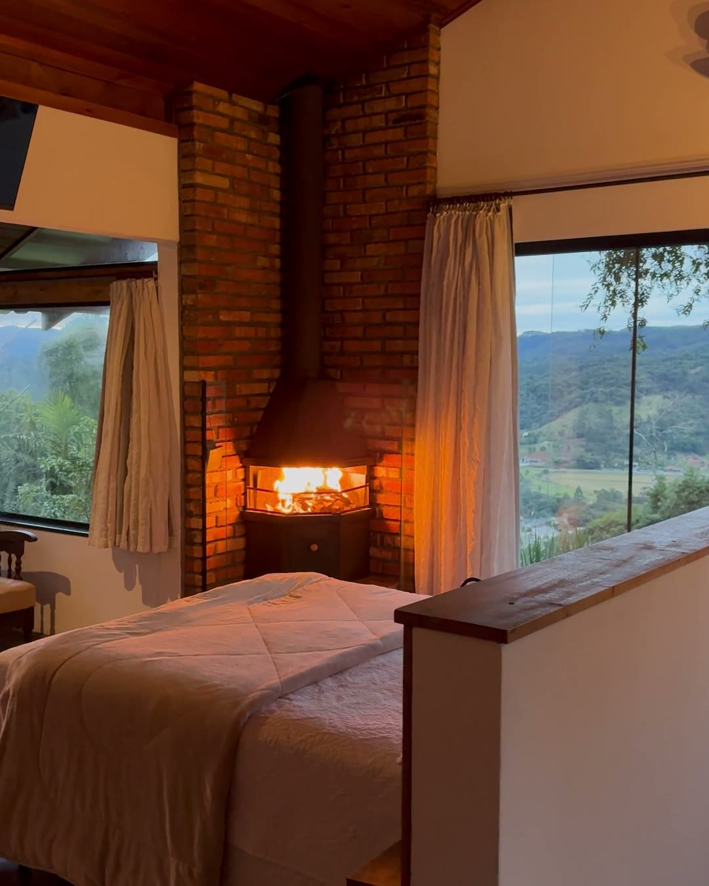
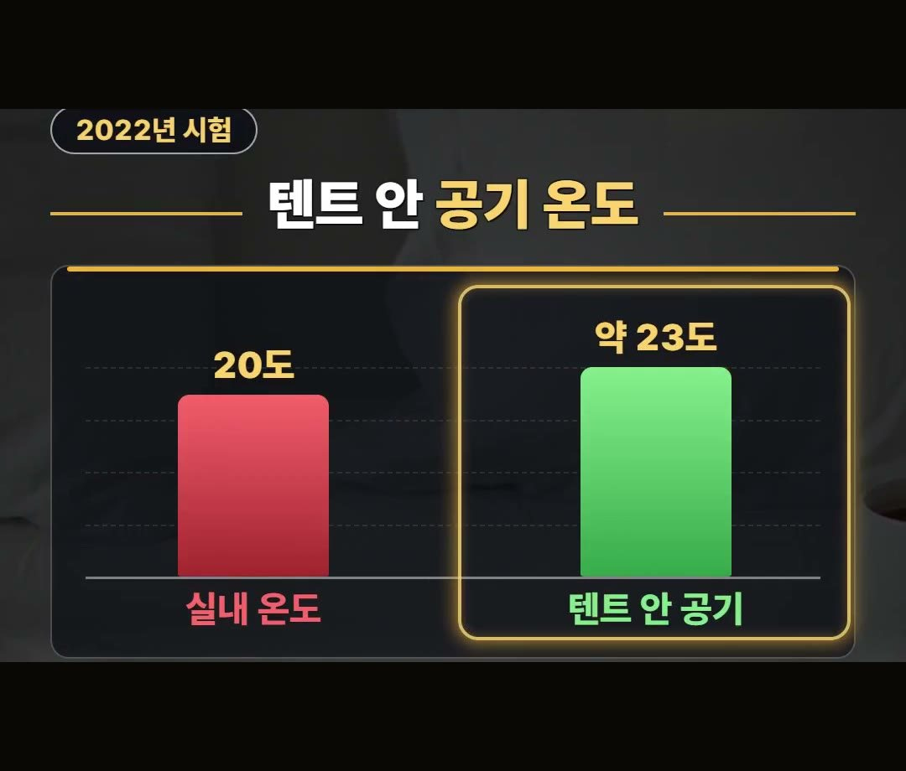
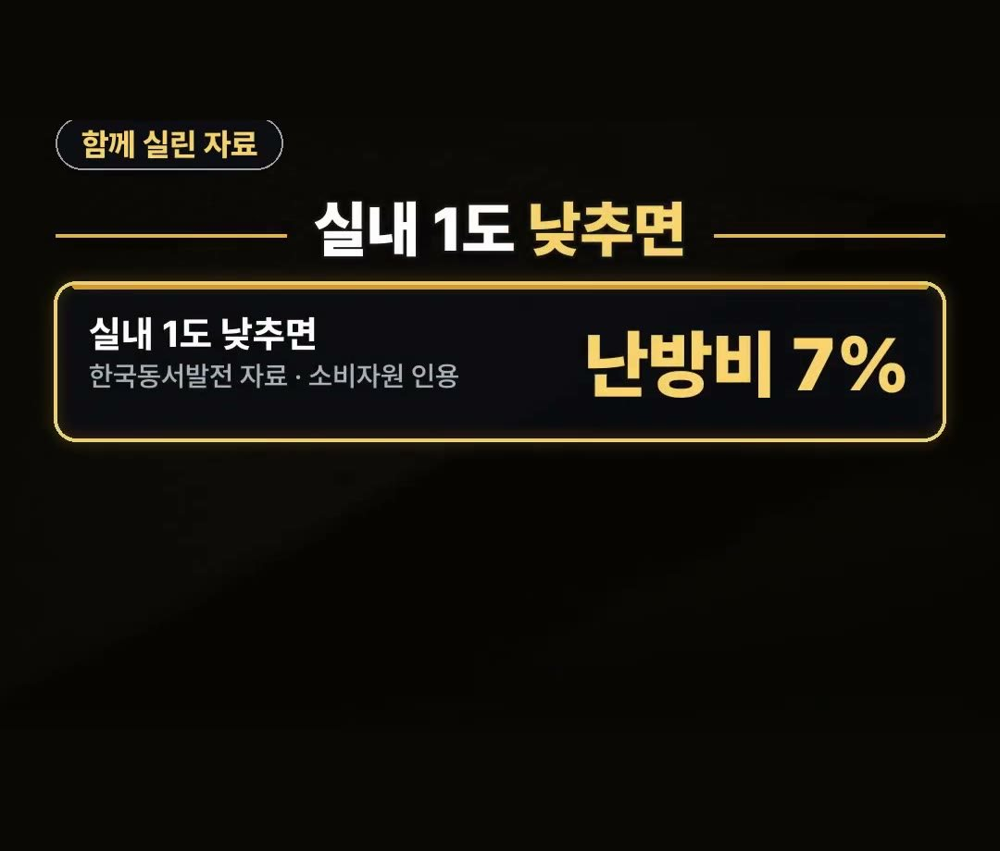
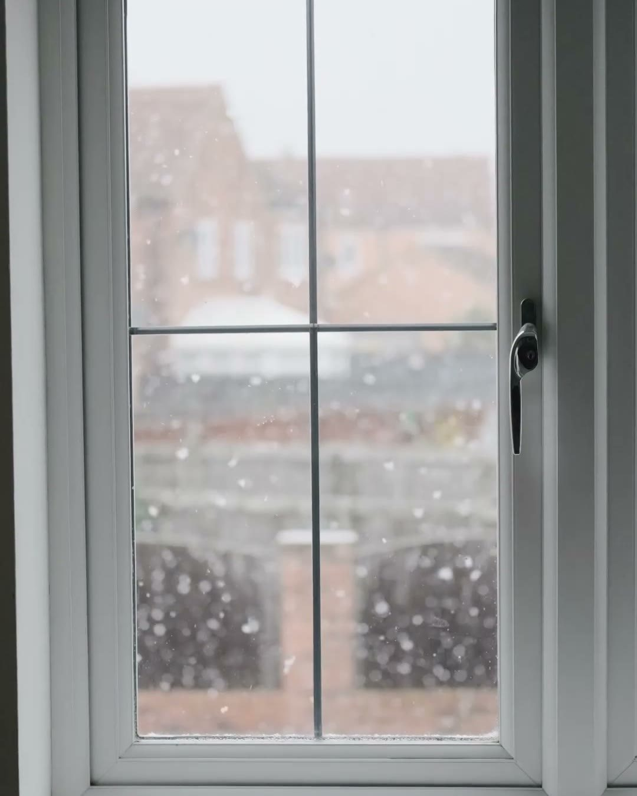

난방텐트 추천 전에, 텐트 안 3도가 오른 시험 조건과 맞는 집 정리
※ 이 글에는 제휴 링크가 포함되어 있으며, 링크를 통해 구매하시면 일정 수수료를 받을 수 있습니다. (가격은 같습니다)
※ 이 포스팅은 쿠팡 파트너스 활동의 일환으로, 이에 따른 일정액의 수수료를 제공받습니다.
※ 이 콘텐츠는 토스쇼핑 쉐어링크 활동의 일환으로, 링크를 통한 구매가 발생하면 일정 수수료를 지급받습니다.
같은 실내 20도 방이라도, 전기장판을 켠 침대에 난방텐트를 쳤을 때와 치지 않았을 때 텐트 안 공기 온도는 3도 정도 차이가 났습니다.
2022년 한국소비자원 시험에서 나온 숫자예요.
이 글에서는 이 3도가 어떤 조건에서 나온 숫자인지, 그리고 어떤 집에 난방텐트가 맞고 어떤 집에는 맞지 않는지 차례로 정리했습니다.
난방텐트의 3도는 '실내 20도 · 전기장판을 켠 침대 · 2022년 소비자원 시험'이라는 조건이 붙은 숫자예요.
방 전체가 아니라 텐트 안 공기가 오른 것이라는 점, 이것 하나만 기억하세요! 🏕️

보일러를 올려도 잠자리가 추운 까닭
겨울밤 보일러 온도를 올려 두어도 잘 때 코끝이 시린 방이 있습니다.
데운 공기가 넓은 방 전체로 흩어지기 때문이에요.
방이 넓을수록, 잠자리 한 곳만 따뜻하게 하고 싶어도 방 전체를 데워야 하는 셈이 됩니다.
난방텐트는 바로 이 지점을 겨냥한 물건이에요.
잠자리만 작게 감싸서 데운 공기를 붙잡아 두는 방식입니다.

난방텐트 효과, 2022년 소비자원 시험 조건부터
한국소비자원은 2022년에 난방텐트 7개 제품을 시험했습니다.
그 가운데 온도 숫자는 이렇게 나왔어요.
- 시험 조건: 실내 온도 20도, 전기장판을 켠 침대
- 텐트를 쳤을 때 텐트 안 공기: 약 23도
- 치지 않았을 때와 견주면: 3도 정도 높음
여기서 꼭 짚을 점은 두 가지입니다.
첫째, 전기장판을 켠 조건이라는 것.
둘째, 오른 것은 텐트 안 공기 온도라는 것이에요.
방 전체 온도가 3도 오른 것이 아니니, 이 숫자를 방 전체 이야기로 넓혀 보지 않는 것이 좋습니다.

실내 1도와 난방비 7%, 함께 실린 자료
같은 시험 자료에는 실내 온도를 1도 낮추면 난방비 7%가 준다는 한국동서발전 자료도 함께 실렸습니다.
- 실내 1도를 낮추면: 난방비 7%
- 자료: 한국동서발전 자료를 소비자원이 함께 실은 것
다만 텐트 안 3도와 이 7%를 곱해서 '난방비가 몇 퍼센트 준다'고 계산하는 것은 맞지 않아요.
두 숫자는 서로 다른 조건에서 나온 것이라, 각각 따로 기억해 두는 편이 정확합니다.

난방텐트 1인용·슈퍼싱글, 살 때 볼 점
1인용 난방텐트를 찾든 더 큰 크기를 찾든, 고를 때 볼 점을 세 가지로 정리했습니다.
- 치수: 침대와 잠자리 크기에 맞는지
- 표시 라벨: 표시사항이 제대로 적혀 있는지
- 프레임 강도: 텐트를 받치는 뼈대가 튼튼한지
2022년 시험에서는 7개 제품 모두 표시사항이 일부 빠져 있었고, 프레임 강도도 제품마다 달랐습니다.
그래서 겉모습보다 치수와 표시 라벨을 먼저 보는 것이 좋아요.
난방텐트가 맞는 집, 사지 말아야 할 집
난방텐트는 쓰는 목적에 따라 맞는 집과 맞지 않는 집이 갈립니다.
- 맞는 집: 전기장판 위 잠자리만 데우려는 집
- 사지 마세요: 방 전체를 데우려는 집
시험에서 오른 것이 텐트 안 공기였던 만큼, 방 전체를 따뜻하게 하려는 목적이라면 난방텐트는 맞지 않아요.
또 텐트 안은 공기가 머무는 공간이니, 아침에는 문을 열어 환기도 해 주세요.
참고로 상품 설명에 따르면 슈퍼싱글 크기에 210 곱하기 120 곱하기 135센티미터인 난방텐트도 있다고 합니다.
우리 침대 치수와 견주어 보시면 됩니다.

정리
- 2022년 소비자원 시험: 실내 20도, 전기장판을 켠 침대에서 텐트 안 공기가 약 23도로 3도 정도 높았어요.
- 실내 1도를 낮추면 난방비 7%가 준다는 한국동서발전 자료가 함께 실렸지만, 두 숫자를 곱하지는 마세요.
- 잠자리만 데우려는 집에 맞고, 살 때는 치수·표시 라벨·프레임 강도를 보세요.
링크는 아래에 모아 두었어요.
📌 2026년 10월 기준 정보예요. 가격은 시기에 따라 달라질 수 있어요.
사진·영상: Pexels (Anastasia Shuraeva, Anete Lusina, Fatma Yıldırım, Fernanda Neitzel, KATRIN BOLOVTSOVA, Monstera Production)